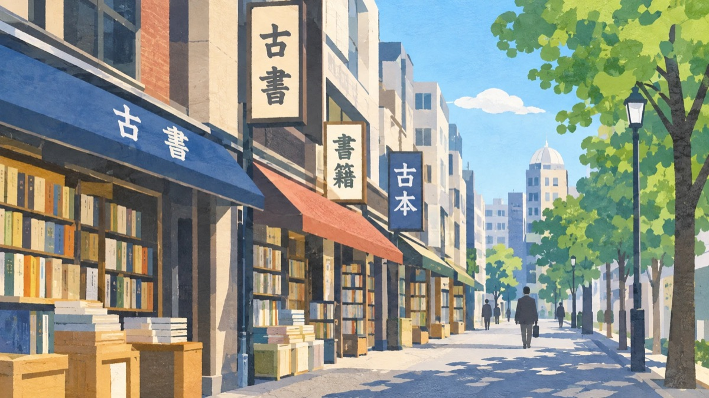

Walk, Talk, Fork.
歩いて、話して、これからの道を選ぶ3時間の散歩対話
日時をこれからの
たとえば、こんなときに
- 今の
仕事を 続けるか 迷っている - 独立や
転職を 考え はじめた - 何かを
変えたいが、 どちらに 進めばいいか 見えない
ひとつでも
なぜ散歩対話なのか
AIに
地図データ © OpenStreetMap contributors
3時間の流れ
Walk, Talk, Fork. の
-
歩くWalk,0:00〜1:00
街を
歩く 待ち合わせた
駅から、 気になる 場所や 店に 寄り道しながら 歩きます。 体を 動かしながら話すうちに、 いつもと 違う モードで 考えられるようになります。 -
話すTalk,1:00〜2:00
これまでを
棚卸しする カフェや
喫茶店に 入り、 最近 気に なっている こと、 続けたい こと、 手放したい ことを 話して もらいます。 歩きながら 出てきた 言葉も 手がかりにします。 -
選ぶFork.2:00〜3:00
進む方向を
決める 落ち着いた
場所で、 進みたい方向を 決め、 あしたから できる 小さな 実験の 方針を 立てます。
たとえばこんなルート

晴天ルート：神保町
- 地下鉄
「神保町」駅の A7出口に 集合 - 三省堂書店 神田神保町本店や
古書店街を 歩く - ギャラリー珈琲店・古瀬戸で
棚卸し - 神田伯剌西爾で
今後の 方針を 決める
雨天ルート：丸の内
- 丸の内オアゾ1階の
広場に 集合 - 丸善の
1〜4階や 地下通路を 歩く - 時間制ラウンジ
「丸善の 三階」で 棚卸し - 「M&C Café」で
今後の 方針を 決める
ともに歩くひと
黒田悠介
キャリア研究家／ディスカッションパートナー
答えを
2013年に
著書
- 『自分の
本音を インプレス、言葉に できる。 』 2026年 - 『コミュニティ経営の
教科書』 翔泳社、2025年 - 『コミュニティシフト』2024年
- 『ライフピボット』インプレス、
2021年
料金と約束
50,000円
税込。
日時を
ご予約日の
- 時間
- 3時間
- 含まれる
もの -
- 3時間の
対話 - 当日の
カフェ代 - 7日以内に
お渡しする言語化レポート
- 3時間の
- 人数
- おひとりで
受けています。 2人での 参加は ご相談ください。 - 場所
-
- 中野駅から
公共交通機関で 30分以内の 駅周辺：追加費用なし - それより
遠い 場所： 私が 中野駅から 往復する 公共交通機関の 実費。 予約の 後に メールで やり取りを する 際に 金額を お伝えします - 宿泊が
必要な 場所：個別に ご相談ください
30分以内の
駅の 目安 新宿、
四ツ谷、 御茶ノ水、 神保町、 東京・丸の内、 大手町、 日本橋、 高田馬場、 池袋、 渋谷、 恵比寿、 表参道、 下北沢、 吉祥寺、 三鷹、 国分寺など。 - 中野駅から
- 支払い
- 予約時に
クレジットカードで 事前に お支払いいただきます。 交通費の 実費は、 当日に 現金か PayPayで お支払いください。
予約までの流れ
- 予約ページで
日時を 選ぶ - クレジットカードで
支払う - メールで
待ち合わせ場所を 決めるスタートしたい 駅と、 録音の 希望を お知らせください - 当日、
3時間を 一緒に 過ごす前日の 夕方に 天気を 見て、 晴天ルートと 雨天ルートの どちらに するか ご連絡します - 7日以内に
言語化レポートを 受け取る
約束できること
- 進みたい方向と小さな
実験の が、方針 3時間の 終わりに 決まっている こと - 言語化レポートを、
7日以内に お渡しする こと
約束できないこと
- 転職、
独立、 収入などの 結果は 保証しません - 「こう
すべきです」と いう 正解は お伝えしません。 決めるのは ご本人です - 転職先や
仕事の 紹介は しません
- 心身の
不調で、 医療や 専門的な カウンセリングが 必要な 状態の 方は、 先に 専門の 機関に ご相談ください。 - 合わせて
1時間ほど 歩きます。 歩くのが 難しい方は、 申し込みの 前に ご相談ください。 - キャンセルと
返金に ついてはキャンセルポリシーを ご覧ください。
言語化レポートの見本
セッションの
言語化レポート
Aさん
歩いた
当日歩いた道
神保町駅の
話したこと
- 入社10年目のいま、
設計から 企画の 部署へ 移らないかと 声を かけられている こと - 移りたい
気持ちは ある ものの、 「設計を 離れたら 自分には 何も 残らない」と 感じて、 返事を 12月の 面談まで 待って もらっている こと - 楽しかった
仕事を 振り返ると、 図面を 描く 時間よりも、 現場の 人の 困りごとを 聞いて 形に する 時間の ほうが 多く 出てきた こと
出てきた
話の中で出てきた言葉
Aさんが
- 「図面を
描くのが 好きなんじゃなくて、 困っている 人の 話を 聞くのが 好きだったのかもしれない」 - 「返事を
延ばしているのは、 怖いからと いう より、 比べる 材料が ないからだと 思う」
進みたい方向
設計で
実験と
小さな実験
結果の
- 10月31日
（土）まで 企画部にいる 同期に 30分ほど 時間を もらい、 1週間の 仕事の 流れと、 いちばん手間の かかる 作業を 聞く - 11月13日
（金）まで 次の工場訪問で、 図面の 確認とは 別に、 現場の 3人に 「いちばん 困っている こと」を 聞いて メモに 残す - 11月27日
（金）まで ここ5年で手応えの あった 仕事を 5つ 書き出し、 それぞれに 「何が 楽しかったか」を 1行ずつ 添える
次に
次に迷ったときに思い出したい問い
「その
3時間の
黒田悠介
Aさんは
よくある質問
キャリア相談やコーチングとどう違いますか
街を
雨の日はどうなりますか
屋内中心の
台風や
どれくらい歩きますか
合わせて
事前に準備することはありますか
準備は
話した内容は録音しますか
レポートを
録音と
詳しくはプライバシーポリシーを
どこで待ち合わせますか
中野駅から
当日にキャンセルできますか
ご予約日の
詳しくはキャンセルポリシーを
領収書は出ますか
お支払いの
2人での参加・研修費での申し込み・ギフトはできますか
いずれも
これからどこに進んでいくか
散歩対話で考える3時間
日時を散歩対話で
日時を
ご予約日の